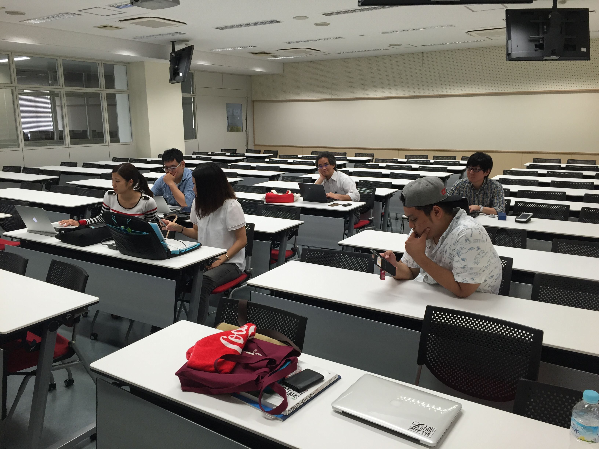
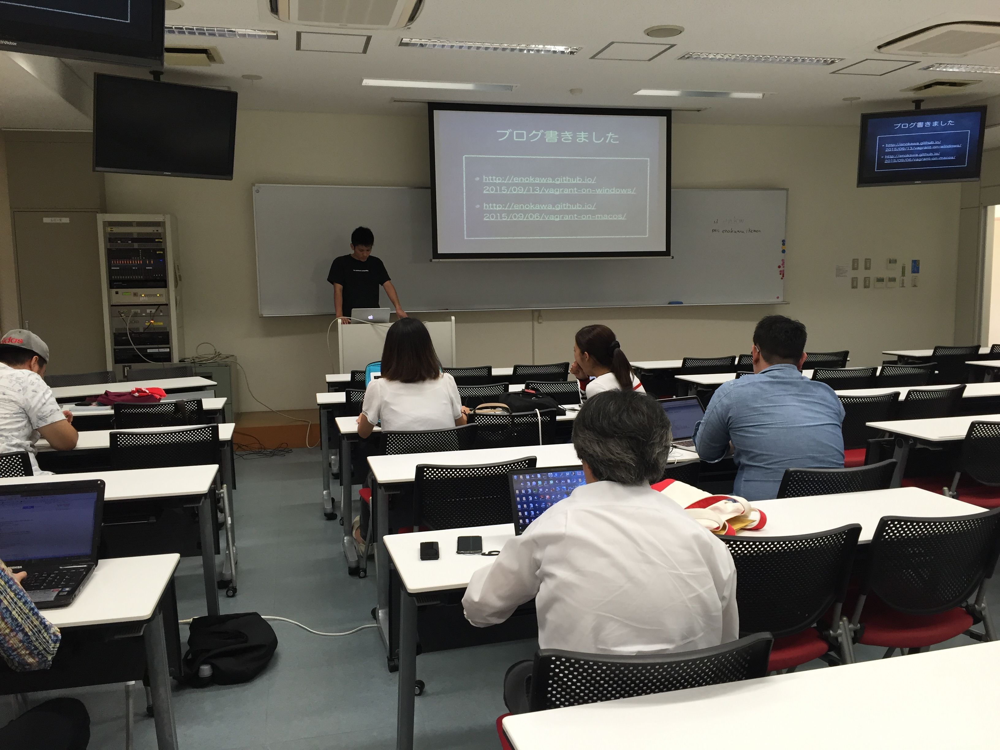

【ゲスト講演】あの男が帰ってくる！？が開催されました
9月24日(木)に沖国Eggsのイベントとして、産業情報学科のOBを招いての講演会とワークショップが行われました。
講師は現在東京でインフラエンジニアとして活躍されている、栄野川 直斗（えのかわ なおと）さん。今回のイベントは産業情報学科向けのイベントということで、テーマも 「VirtualBox+Vagrantで脱XAMPPしようの巻」と少し難しめ...しかし、習得すれば情報系のゼミの方は卒論が捗ること間違い無し！の内容でした。
最初は不安そうだった参加者のみなさんも、栄野川さんの説明のおかげでサクサクと作業を進められていたようで運営の私も安心しました！
少ない人数ではありましたがとても充実した講演会になりました！
実は今回のワークショップの内容は講師の栄野川さんがブログにまとめてくれています！都合が悪くて参加できなかったみなさんは、下記のブログを参考に作業してみてください！
参加してくださったみなさま。講師の栄野川直斗さん。本当にありがとうございました！
VagrantでWordPress環境を作る（Windows編）
VagrantでWordPress環境を作る（MacOSX編）
沖国Eggs Facebookページ
沖国Eggsでは運営メンバーを募集しています。プログラミングに興味がある人、コミュニティの運営に興味がある人は学籍番号12DB097中西哲大まで連絡待ってます！
産業情報学科４年次
中西 哲大
- 
- 